Dynamic Organism State Indicator#
Introduction#
Our team encouraged to reproduce the Cox proportional hazards analysis from paper by Pyrkov Timothy V., et al., Nature Communications 2021 on the NHANES dataset (unfortunately other datasets are proprietary).
Theories of aging#
Nowadays there are three main theories of aging :
Programmed aging theory, which considers aging as certain predetermined, timed phenomena that causes death directly
Stochastic aging theory, which considers aging as events that occur randomly, accumulate over time and cause death directly
Quasi - programmed theory, which assumes that aging as a shadow, manifestation of growth, development, differentiation. This theory claims that aging is a pseudo-program that doesn’t cause death directly
https://doi.org/10.4161%2Fcc.27188
In the article authors support stochastic theory of aging, and we are going to reproduce it.
PCA#
To understand the character of age-related evolution of the organism authors employed dimensionality-reduction technique (PCA) for Complete Blood Count covariates. We will remind the main thery aspect about this technique:
Principal Component Analysis (PCA) decomposes multivariate dataset in a set of orthogonal components that explain a maximum amount of variance. The best-fitting line is the one that minimizes the average squared perpendicular distance from the points to the line. In the picture you can see principle components of some data as an example.
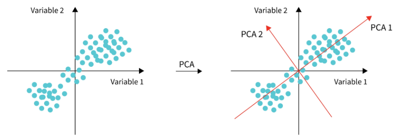
Cox Proportional Hazards#
https://arxiv.org/pdf/1708.04649.pdf
CoxPH is a hybrid of the parametric and non-parametric approaches, in other words, semi-parametric model, which can obtain a more consistent estimator under a broader range of conditions compared to the parametric models, and a more precise estimator than the non-parametric methods.
The Basic Cox Model formula for patient \(i\) is the folowing:
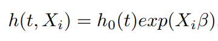
Formula consists of the baseline hazard function, \(h_0(t)\) and the partial hazard \(exp(X_i β)\). The baseline hazard function \(h_0(t)\) can be an arbitrary nonnegative function of time, \(X_i = (x_{i1}, x_{i2}, · · · , x_{iP} )\) is the covariate vector for instance i, and \(β^T = (β_1, β_2, · · · , β_P )\) is the coefficient vector. \(X_i\) is a covariate vector for time-invariant covariates, however, there is a need to use Cox with time-varying covariates, one could try an extended Cox model by adding the vector of time-varying covariates multiplied by vector of their coefficients.
The Cox model is a semi-parametric algorithm since the baseline hazard function, \(h_0(t)\), is unspecified and the outcome distribution is unknown.
Cox model is a proportional hazards model since the hazard ratio is a constant independent of the baseline hazard function and time because all the subjects share the same baseline hazard function.
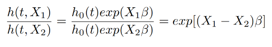
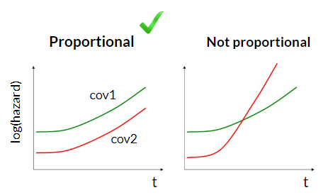
Cox PH is a regression model, however, as the baseline hazard function \(h_0(t)\) is not specified, it is not possible to fit the model using the standard likelihood function. Hazard function \(h_0(t)\) is a nuisance function, while the coefficients β are the parameters of interest in the model. To estimate the coefficients, Cox proposed a partial likelihood which depends only on the parameter of interest β and is free of the nuisance parameters.
The hazard function refers to the probability that an instance with covariate X fails at time t on the condition that it survives until time t can be expressed by \(h(t, X)dt\) with \(dt → 0\). Let \(J (J ≤ N)\) be the total number of events of interest that occurred during the observation period for N instances, and \(T_1 < T_2 < · · · < T_J\) is the distinct ordered time to event of interest. Let \(X_j\) be the corresponding covariate vector for the subject who fails at \(T_j\) , and \(R_j\) be the set of risk subjects at \(T_j\) . Thus, conditional on the fact that the event occurs at \(T_j\), the individual probability corresponding to covariate \(R_j\) can be formulated as follows:
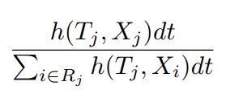
The partial likelihood is the product of the probability of each subject. Referring to the Cox assumption and the presence of the censoring, the partial likelihood is defined as follows:
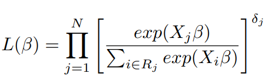
Here \(j = 1, 2, · · · , N\). Censoring is accounted by \(δ_j\), if \(δ_j = 1\), the \(j_{th}\) term in the product is the conditional probability, otherwise, when \(δ_j = 0\), the corresponding term is 1, which means that the term will not have any effect on the final product. The coefficient vector \(β\) is estimated by maximizing this partial likelihood, or equivalently, minimizing the negative log-partial likelihood.
COX PH output#
https://sphweb.bumc.bu.edu/otlt/mph-modules/bs/bs704_survival/BS704_Survival6.html
The main output of Cox PH model are estimated \(β\) coefficients in a form of loghazard ratios or hazard ratios. The loghazard ratio represents the increase in the expected log of the relative hazard for each one unit increase in the predictor covariate, holding other covariates constant. The hazard ratios are computed by exponentiating loghazard ratios for more interpretability and can show the increase in the expected hazard in percents.
In the article we are going to reproduce authors mostly are interested in computing log-partial hazard for every patient, referred as DOSI - dynamic organism state indicator.
Results and Discussion#
PCA#
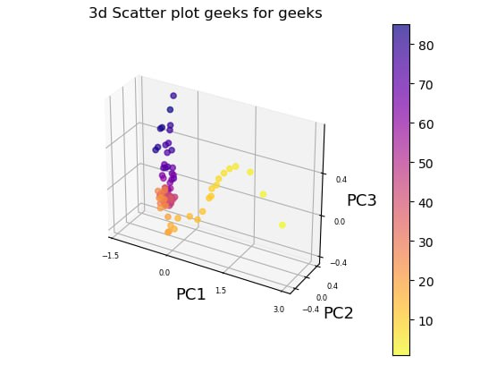
The average points clearly correlate to different stages of organism development and aging and follow a well-defined trajectory or flow in the multivariate configuration space spanned by the physiological variables.
We divided the aging trajectory into three discrete periods that correspond to infancy (under 20 years old), middle age (20–50 years old), and senior age (beyond 50 years old) (older than 50 y.o.). The trajectory was essentially linear inside each segment.
Cox Proportional Hazards#
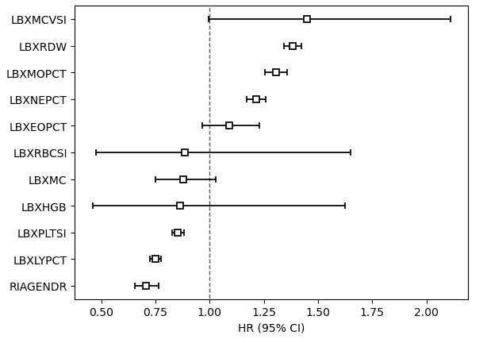
Hazard ratios for Cox model covariates
Interestingly, our model has better result in used evaluation metric, Concordance Index:
Our model |
Article |
|
|---|---|---|
train |
0.723 |
0.68 |
test |
0.72 |
0.67 |
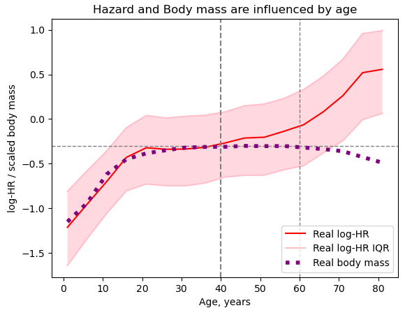
Here we can see organism state changes during age. As we can see, body weight and DOSI change with age, and we can distinguish three main phases. In the first phase, the body grows, both indicators grow. Then the state of the body reaches a certain plateau. And finally, at the end we observe the third phase, aging. The log-hazards ratio begins to grow exponentially again, and body weight begins to decrease.
DOSI and health conditions#
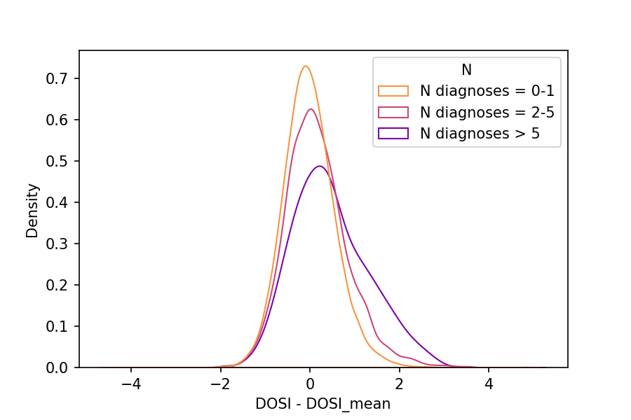
Futher we analyzed relationship between DOSI and frailty. For this we obtained data about 10 health conditions: hypertension, arthritis, cancers, coronary heart disease, angina pectoris, emphysema, heart attack, stroke, congestive heart failure, bronchitis.
The normalized distribution of DOSI values (after normalization for the respective mean levels in age- and sex-matched cohorts of healthy subjects) showed a progressive shift and greater variability in groups stratified by increasing number of health condition diagnoses.
DOSI and CMI#
To separate the effects of chronic diseases from disease-free aging, special index was calculated for each participant. It is CMI - compound morbidity index. CMI is number of diagnosed diseases from the list: Hypertension, Arthritis, Cancers, Coronary heart disease, Angina pectoris, Emphysema, Heart attack, Stroke, Congestive heart failure, Bronchitis.
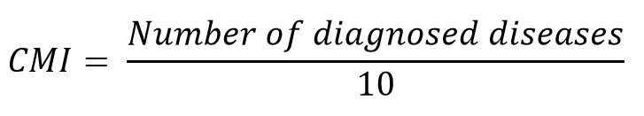
So, it can take values from 0 to -1.
Based on CMI, all participants were divided into 3 groups:
• non-frail (CMI <0.1)
• frail (0,1<=CMI<0.6)
• most-frail (CMI>0.6)
Frail fraction calculation
Then for each age cohort frail fraction was calculated.
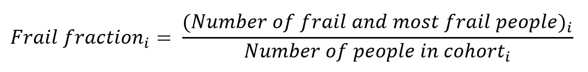
Calculating of frail fraction was performed in R:
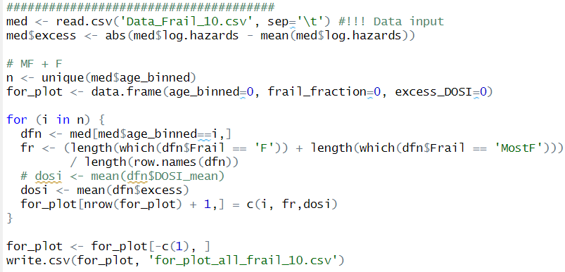
The fraction of frail persons is strongly correlated with the excess DOSI levels:
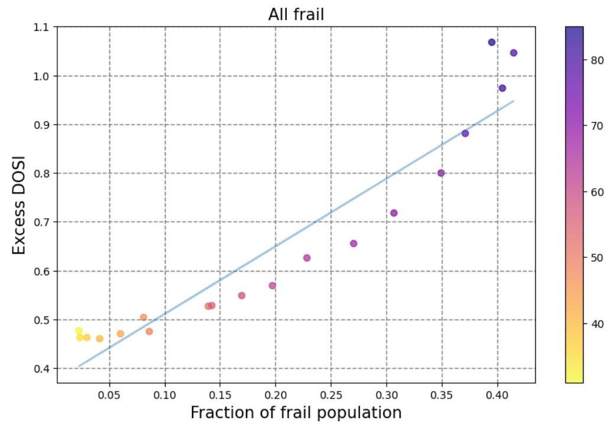
Excess DOSI level is the difference between the DOSI of an individual and its average and the age-matched cohort.
The fraction of most-frail and frail subjects is increasing exponentially at every given age. We also observe strong correlation between DOSI level and organism state during different aging states:
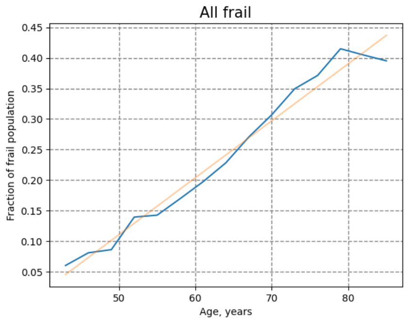
DOSI and health risks#
From all participants were chosen only non-frail individuals, those, who has minimal number of diagnosed diseases from the list above. There is a plot, showing the dependence between DOSI level and smoking habits of subjects:
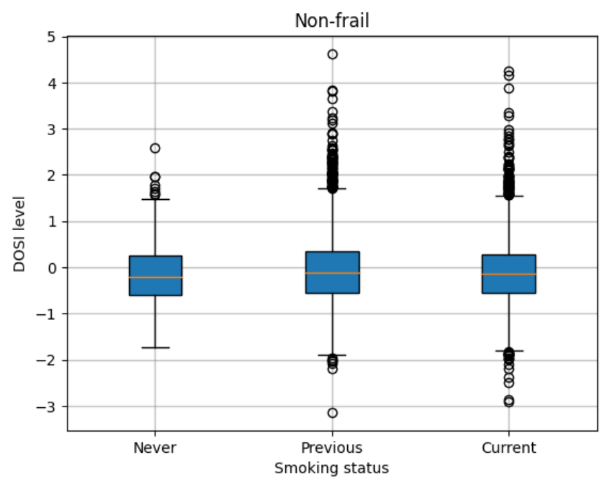
We see, that in the most healthy individuals with life-shortening behavior, such as smoking, the DOSI was also elevated. It can indicate a higher level of risks of future diseases and death. It is an example, how DOSI index can be used in order to predict future risks of chronic age-related diseases.
Maximum lifespan prediction#
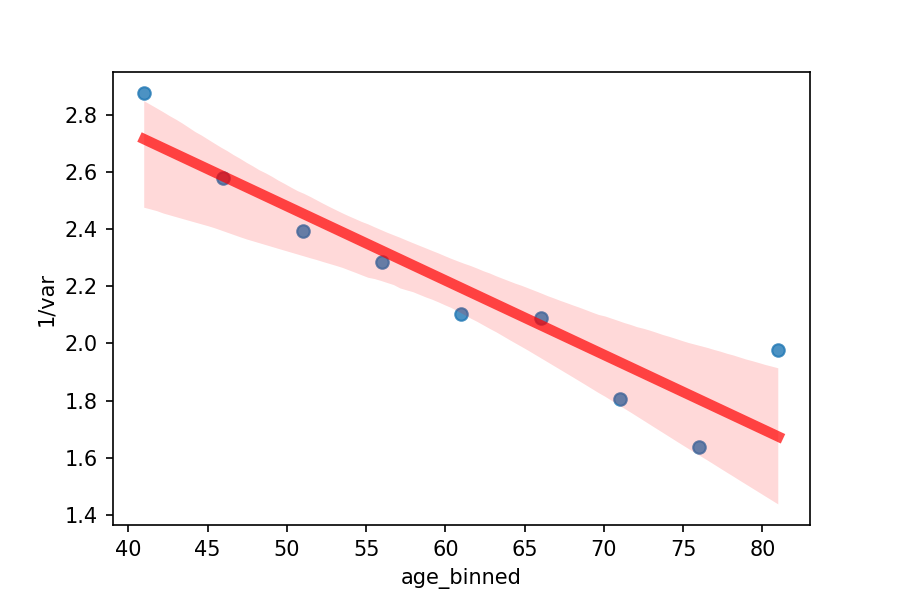
Interestingly, the DOSI’s variability did rise with age. We plotted the inverse variance of the DOSI computed in cohorts comprising the most healthy people that were sex- and age-matched in order to confirm our theoretical predictions of the inverse relationship between resilience and fluctuations. Extrapolation predicted that, if the tendency persists as people get older, the population variability would continue to rise until they were between 120 and 150 years old.
Credits#
This project was done by Margarita Sidorova, Tatiana Pashkovskaia, Anna Ponomareva